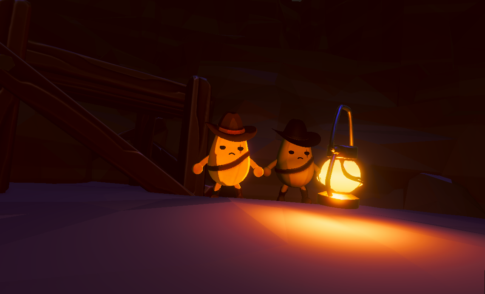
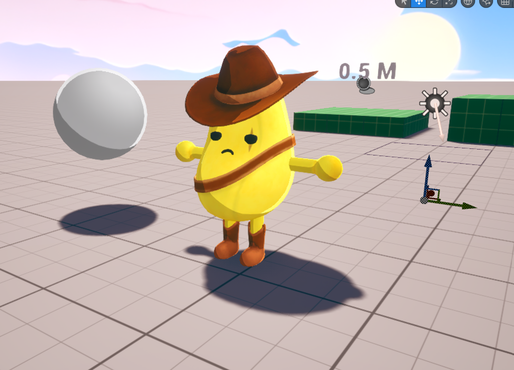
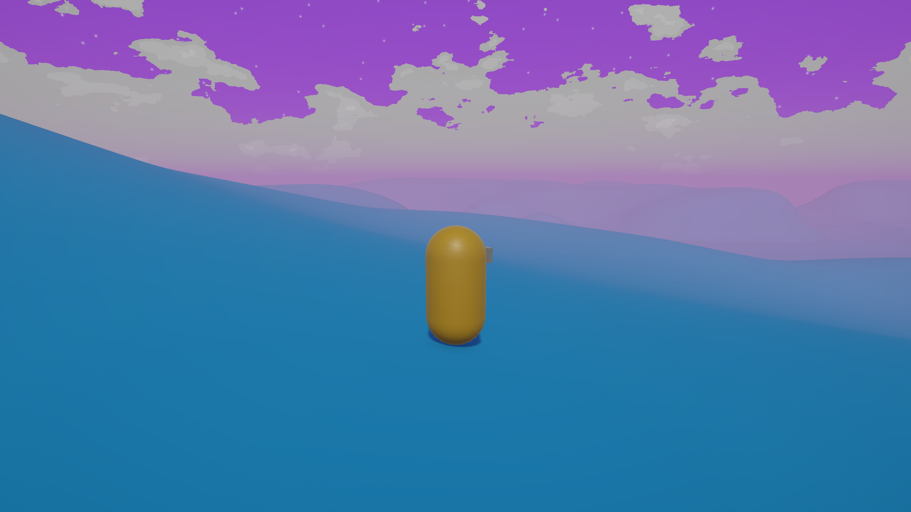
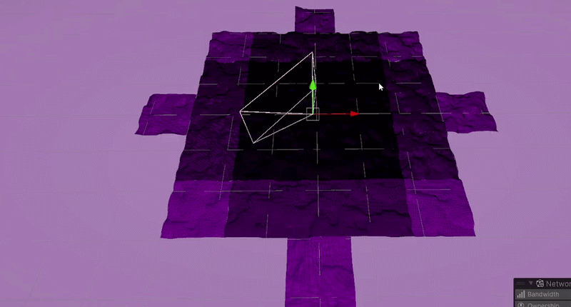
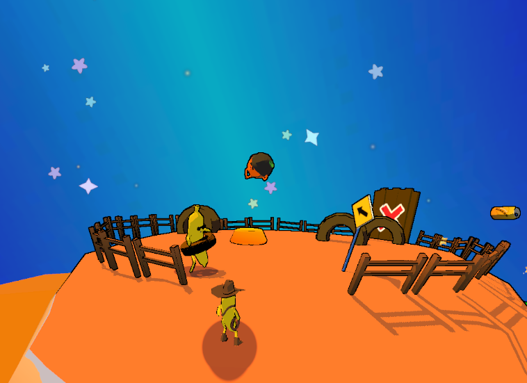

Welcome to Joaquin Niles' portfolio website :3c
I'm a technical artist that focuses on stylized 3D aesthetics
Having gone through the game development and design program, I have been through a multitude of rigorous classes meant to prepare me for industry.
My experience being a technical artist throughout my time at UT and after has allowed me to hone my skills in shader development, creating visual effects, optimizing assets and scenes, tooling, and bridging the gap between art and programming.
Besides working on games, I like working on random stylized scenes that just pop in my head (like the one you're seeing in the background).
Its my philosophy that while realistic graphics have their place within certain games, stylized graphics are one of the big differentiators of games today.
My work reflects this philosophy as all my projects are heavily stylized or are meant to aid people wanting stylized graphics.
Check out my games and projects below
please enjoy your stay


banana cowboy stylized art aesthetic concept with base shader reference on the right

banana cowboy current toon shader implementation

unreal engine stylized grass foliage in-game
ACTION ADVENTURE PLATFORMER: Banana Cowboy - The Wild Bunch (work in progress)
Betrayed by his friends during a botched train heist, Banana Cowboy reinvents himself as a deputy on the tiny planet of Durian Gap. Life is good out on the galactic frontier… until the past comes knocking. Now, Banana Cowboy races to catch his former comrades before the law can catch him
(made in unreal engine 5)
Contributions include:
- Creating stylized shaders according to artistic needs
- Creating visual effects and their needed components such as meshes/maps
- Researching and implementing optimizations in preparations for a switch port
- Writing automated profiling tests with the Unreal Engine Insights tool and Automation Testing Framework
- Working with animation timelines and static mesh sockets to time effects for cutscenes
- Debugging many material and animation related bugs
Check out the game here: steam page

STOMACH psx shader and post-processing concept scene with rigged fish model in-engine
FIRST PERSON SURVIVAL HORROR GAME: STOMACH (2025)
STOMACH is a first-person survival horror cooking game located in a cruise ship with PS1 inspired graphics to capture that retro horror feeling. Your task is to read a food order, search for food ingredients, and make it back safely to the kitchen to cook your ingredients before time runs out
(made in unity engine)
Contributions include:
- Implementing several rendering features to achieve our desired artistic goals while meeting performance benchmarks
- Researching and re-implementing various PS1 hardware quirks for added authenticity
- Implementing solutions for complex graphical effects using stencil buffers and script-material interactions
- Creating a pipeline for artists to follow when creating assets or iterating on existing assets
Check out the game here: steam page

procedurally generated terrain as it looks in-game

terrain chunk lods visualized using wireframe mode
TECH DEMO: Descent (2025)
Descent is my personal descent into learning procedural terrain generation techniques. It utilizes both hlsl and C# to procedurally generate noise based terrain with multiple optimizations to improve performance, and it's multiplayer :P
(made in unity engine)
Features include:
- Infinitely generating terrain, with generation modifiers controlled by scriptable objects in-engine
- Optimizations such as chunking, LODs, and chunk streaming to improve performance and memory management
- Renders the chunk borders between LOD changes at a higher resolution to help mask stitching
- Implemented multitheading when generating a new chunk or loading chunk data
- Implemented Steamworks networking API to allow friends with a build of the game to join eachother on Steam
Check out the git repo here: github page

banana cowboy (2024) stylized art showcase screenshot
ACTION ADVENTURE PLATFORMER: Banana Cowboy (2024)
The original Banana Cowboy game! Play as Banana Cowboy and adventure in fruit-themed universe, rescuing your people from your evil twin who has taken over the Banana Kingdom. Use your trusty lasso and spaceship horse to travel to the Orange Biker and Blueberry Pirate planets and save the universe from the Evil King
(made in unity engine)
Contributions include:
- Creating character and environmental shaders
- Creating visual effects for the game
- Benchmarking the graphical performance of our game using the Unity Profiler and implementing a frustum-culling solution
Check out the game here: steam page itch.io page

open source optimized highlight outline render-feature solution for Unity 6.0+
UNITY RENDER-FEATURE: Highlight Selection Outline (2026)
A selection outline Unity render-feature. For Unity versions 6.0 onwards since they updated their render pipeline. Uses both shadergraph and hlsl code to create a seamless post-processing highlight outline
Features include:
- The outline render-feature, which includes passes for masking the highlighted objects and then a blur -> sharpen pass to create the outline
- The ability to make a mask of what render layers are targeted by the render feature
- The ability to make outlines ignore scene depth
Check out the git repo here: github page